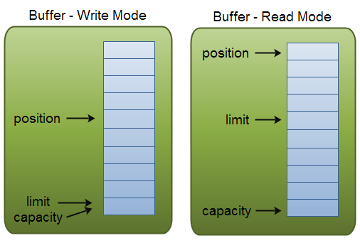
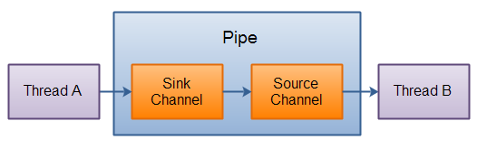

从 1.4 版本开始，Java 提供了另一套 I/O 系统，称为 NIO(New I/O 的缩写)。NIO 支持面向缓冲区的、基于通道的 I/O 操作。随着 JDK7 的发布，Java 对 NIO 系统进行了极大扩展，增强了对文件处理和文件系统特性的支持。缘于 NIO 文件类提供的功能，NIO 预期会成为文件处理中越来越重要的部分。
NIO 包含下面几个核心的组件：
- Channels
- Buffers
- Selectors
还有基于文件的几个核心组件：
- Path
- FileSystem
下面我们就以核心组件展开来说。
通道和缓冲区（Channels and Buffers）
标准的 I/O 编程接口是面向字节流和字符流的。而 NIO 是面向通道和缓冲区的，数据总是从通道中读到 buffer 缓冲区内，或者从 buffer 写入到通道中。

Channel
I/O 操作的纽带。
通道表示与实体的开放连接，例如硬件设备、文件、网络套接字或能够执行一个或多个不同 I/O 操作（例如读取或写入）的程序组件。
通道要么打开要么关闭。 通道在创建时打开，一旦关闭，它便保持关闭状态。
有很多的 Channel 类型。下面列举了主要的几种：
- FileChannel - 用于读取、写入、映射和操作文件的通道。
- DatagramChannel - 可以通过 Selector 复用的面向报文的套接字通道。
- SocketChannel - 可以通过 Selector 复用的面向流的连接套接字通道。
- ServerSocketChannel - 可以通过 Selector 复用的面向流的侦听套接字通道。
Java NIO Channel 通道和流非常相似，主要有以下几点区别：
- 通道即可以读也可以写，流一般来说是单向的（只能读或者写）。
- 通道可以异步读写。
- 通道总是基于缓冲区 Buffer 来读写。
在 Java NIO 中如果一个 Channel 是 FileChannel 类型的，那么他可以直接把数据传输到另一个 Channel。逐个特性得益于 FileChannel 包含的 transferTo 和 transferFrom 两个方法。
-
FileChannel.transferFrom方法把数据从通道源传输到 FileChannel1
2
3
4
5
6
7
8
9
10RandomAccessFile fromFile = new RandomAccessFile("fromFile.txt", "rw");
FileChannel fromChannel = fromFile.getChannel();
RandomAccessFile toFile = new RandomAccessFile("toFile.txt", "rw");
FileChannel toChannel = toFile.getChannel();
long position = 0;
long count = fromChannel.size();
toChannel.transferFrom(fromChannel, position, count);transferFrom 的参数 position 和 count 表示目标文件的写入位置和最多写入的数据量。如果通道源的数据小于 count 那么就传实际有的数据量。
另外，有些 SocketChannel 的实现在传输时只会传输哪些处于就绪状态的数据，即使 SocketChannel 后续会有更多可用数据。因此，这个传输过程可能不会传输整个的数据。 -
FileChannel.transferTo方法把 FileChannel 数据传输到另一个 channel1
2
3
4
5
6
7
8
9
10RandomAccessFile fromFile = new RandomAccessFile("fromFile.txt", "rw");
FileChannel fromChannel = fromFile.getChannel();
RandomAccessFile toFile = new RandomAccessFile("toFile.txt", "rw");
FileChannel toChannel = toFile.getChannel();
long position = 0;
long count = fromChannel.size();
fromChannel.transferTo(position, count, toChannel);这段代码和之前介绍 transferFrom 时的代码非常相似，区别只在于调用方法的是哪个 FileChannel.
SocketChannel 的问题也存在与 transferTo 的实现可能只在发送的 buffer 填充满后才发送，并结束。
Scatter/Gather IO
Java NIO 发布时内置了对分散（Scatter）/ 聚集（Gather）IO 的支持。Scatter / Gather 是通过单个通道向多个 Buffer 读写数据的两个概念。
Scattering Read 指的是从通道读取的操作能把数据写入多个 Buffer，也就是 Scatter 代表了数据从一个 Channel 到多个 Buffer 的过程。
Scatter / Gather 在有些场景下会非常有用，比如需要处理多份分开传输的数据。举例来说，假设一个消息包含了 Header 和 Body，我们可能会把 Header 和 Body 保存在不同独立 Buffer 中，这种分开处理 Header 与 Body 的做法会使开发更简明。
Java 提供了 java.nio.channels.ScatteringByteChannel 接口，以支持 Scattering 和 java.nio.channels.GatheringByteChannel 接口来支持 Gathering。
Scattering Read
“Scattering Read” 是把数据从单个 Channel 写入到多个 Buffer，下面是示意图：

用代码来表示的话如下：
1 | ByteBuffer header = ByteBuffer.allocate(128); |
观察代码可以发现，我们把多个 buffer 写在了一个数组中，然后把数组传递给 channel.read() 方法。read() 方法内部会负责把数据按顺序写进传入的 buffer 数组内。一个 buffer 写满后，接着写到下一个 buffer 中。
实际上，Scattering Read 内部必须写满一个 buffer 后才会向后移动到下一个 buffer，因此这并不适合消息大小会动态改变的部分，也就是说，如果你有一个 header 和 body，并且 header 有一个固定的大小（比如 128 字节），这种情形下可以正常工作。
Gathering Write
“Gathering Write” 把多个 Buffer 的数据写入到同一个 Channel 中，下面是示意图：

用代码表示的话如下：
1 | ByteBuffer header = ByteBuffer.allocate(128); |
Buffer
缓冲区是特定原始类型数据的容器，本质上就是一块内存区，可以用来写入数据，并在稍后读取出来。
下面是核心的 Buffer 实现类的列表：
- ByteBuffer
- CharBuffer
- DoubleBuffer
- FloatBuffer
- IntBuffer
- LongBuffer
- ShortBuffer
这些 Buffer 涵盖了可以通过 I/O 操作的基础类型：byte，short，int，long，float，double 以及 characters。NIO 实际上还包含一种 MappedBytesBuffer，一般用于和内存映射的文件。
容量，位置，上限
一个Buffer有三个属性是必须掌握的，分别是：
- capacity - 容量
- position - 位置
- limit - 限制
position 和 limit 的具体含义取决于当前 buffer 的模式。capacity 在两种模式下都表示容量。
下面有张示例图，描诉了不同模式下 position 和 limit 的含义：

容量（Capacity）
作为一块内存，buffer 有一个固定的大小，叫做 capacity 容量。也就是最多只能写入容量值得字节，整形等数据。一旦 buffer 写满了就需要清空已读数据以便下次继续写入新的数据。
位置（Position）
当写入数据到 Buffer 的时候需要中一个确定的位置开始，默认初始化时这个位置 position 为 0，一旦写入了数据比如一个字节，整形数据，那么 position 的值就会指向数据之后的一个单元，position 最大可以到 capacity。
当从 Buffer 读取数据时，也需要从一个确定的位置开始。buffer 从写入模式变为读取模式时，position 会归零，每次读取后，position 向后移动。
上限（Limit）
在写模式，limit 的含义是我们所能写入的最大数据量。它等同于 buffer 的容量。
一旦切换到读模式，limit 则代表我们所能读取的最大数据量，他的值等同于写模式下 position 的位置。
数据读取的上限时 buffer 中已有的数据，也就是 limit 的位置（原 position 所指的位置）。
标记和重置
缓冲区的标记是在调用 reset 方法时将其位置重置到的索引。 标记并不总是被定义，但当它被定义时，它永远不会是负数，也永远不会大于位置。 如果定义了标记，则在将位置或限制调整为小于标记的值时将丢弃该标记。 如果未定义标记，则调用 reset 方法会导致抛出 InvalidMarkException 。
不变量
以下不变量适用于标记、位置、限制和容量值：
0 <= 标记 <= 位置 <= 限制 <= 容量
新创建的缓冲区始终具有零位置和未定义的标记。 初始限制可能为零，也可能是某个其他值，具体取决于缓冲区的类型及其构造方式。 新分配的缓冲区的每个元素都初始化为零。
清除，翻转和倒带
利用 Buffer 读写数据，通常遵循四个步骤：
- 把数据写入 Buffer；
- 调用
buffer.flip()； - 从 Buffer 中读取数据；
- 调用
buffer.clear()或者buffer.compact()
当写入数据到 buffer 中时，buffer 会记录已经写入的数据大小。当需要读数据时，通过 flip() 方法把 buffer 从写模式调整为读模式；在读模式下，可以读取所有已经写入的数据。
当读取完数据后，需要清空 buffer，以满足后续写入操作。清空 buffer 有两种方式：调用 clear() 或 compact() 方法。clear 会清空整个 buffer，compact 则只清空已读取的数据，未被读取的数据会被移动到 buffer 的开始位置，写入位置则近跟着未读数据之后。
如果想重复读取已写入的数据，可以使用 rewind() 将 position 置为 0。
选择器（Selectors）
SelectableChannel 对象的多路复用器。
选择器允许单线程操作多个通道。如果你的程序中有大量的链接，同时每个链接的 I/O 带宽不高的话，这个特性将会非常有帮助。比如聊天服务器。 下面是一个单线程中 Selector 维护 3 个 Channel 的示意图：

要使用 Selector 的话，我们必须把 Channel 注册到 Selector 上，然后就可以调用 Selector 的 select() 方法。这个方法会进入阻塞，直到有一个 Channel 的状态符合条件。当方法返回时，线程就可以处理事件，比如：连接事件，数据到达事件等。
创建 Selector
创建一个Selector可以通过Selector.open()方法：
1 | Selector selector = Selector.open(); |
注册 Channel 到 Selector 上
为了通过 Selector 来使用 Channel，我们必须先把 Channel 注册到 Selector 上，这个操作可以使用 SelectableChannel.register() 完成：
1 | channel.configureBlocking(false); |
Channel 必须处于非阻塞模式才能与 Selector 一起使用。这意味着您不能将 FileChannel 与 Selector 一起使用，因为 FileChannel 无法切换到非阻塞模式。不过，套接字通道可以正常工作。
注意 register() 方法的第二个参数。这是一个“关注集合（interest set）”，代表我们关注的 Channel 状态，有四种基础类型可供监听 。
- Connect
- Accept
- Read
- Write
一个 channel 触发了一个事件也可视作该事件处于就绪状态。因此当 channel 与 server 连接成功后，那么就是“连接就绪”状态。server socket channel 接收请求连接时处于“可连接就绪”状态。channel 有数据可读时处于“读就绪”状态。channel 可以进行数据写入时处于“写就绪”状态。
这四个事件由四个 SelectionKey 常量表示：
- SelectionKey.OP_CONNECT
- SelectionKey.OP_ACCEPT
- SelectionKey.OP_READ
- SelectionKey.OP_WRITE
如果您对多个事件感兴趣，可以使用 OR 将常量放在一起，如下所示：
1 | int interestSet = SelectionKey.OP_READ | SelectionKey.OP_WRITE; |
SelectionKey
正如您在上一节中看到的，当您使用 Selector 注册 Channel 时， register() 方法返回一个 SelectionKey 对象。这个 SelectionKey 对象包含一些有趣的属性：
- 关注集合 The interest set
- 就绪集合 The ready set
- The Channel
- The Selector
- 附加对象 An attached object (optional)
这 5 个属性都代表什么含义呢？下面会一一介绍。
Interest Set
这个“关注集合”实际上就是我们希望处理的事件的集合，它的值就是注册时传入的参数，我们可以用按为与运算把每个事件取出来：
1 | int interestSet = selectionKey.interestOps(); |
Ready Set
"就绪集合"中的值是当前 channel 处于就绪的值，一般来说在调用了 select 方法后都会需要用到就绪状态，select 会在后面介绍。
1 | int readySet = selectionKey.readyOps(); |
从“就绪集合”中取值的操作类似于“关注集合”的操作，当然还有更简单的方法，SelectionKey 提供了一系列返回值为 boolean 的的方法：
1 | selectionKey.isAcceptable(); |
Channel + Selector
从 SelectionKey 操作 Channel 和 Selector 非常简单：
1 | Channel channel = selectionKey.channel(); |
Attaching Objects
我们可以给一个 SelectionKey 附加一个 Object，这样做一方面可以方便我们识别某个特定的 channel，同时也增加了 channel 相关的附加信息。例如，可以把用于 channel 的 buffer 附加到 SelectionKey 上：
1 | selectionKey.attach(theObject); |
附加对象的操作也可以在 register 的时候就执行：
1 | SelectionKey key = channel.register(selector, SelectionKey.OP_READ, theObject); |
从 Selector 中选择 Channel
一旦我们向 Selector 注册了一个或多个 channel 后，就可以调用 select 来获取 channel。select 方法会返回所有处于就绪状态的 channel。 select 方法具体如下：
- int select()
- int select(long timeout)
- int selectNow()
select() 方法在返回 channel 之前处于阻塞状态。 select(long timeout) 和 select 做的事一样，不过他的阻塞有一个超时限制。
selectNow() 不会阻塞，根据当前状态立刻返回合适的 channel。
select() 方法的返回值是一个 int 整形，代表有多少 channel 处于就绪了。也就是自上一次 select 后有多少 channel 进入就绪。举例来说，假设第一次调用 select 时正好有一个 channel 就绪，那么返回值是 1，并且没有 对这个 channel 做任何处理，接着再次调用 select，此时恰好又有一个新的 channel 就绪，那么返回值还是 1，现在我们一共有两个 channel 处于就绪，但是在每次调用 select 时只有一个 channel 是就绪的。
selectedKeys()
在调用 select 并返回了有 channel 就绪之后，可以通过选中的 key 集合来获取 channel，这个操作通过调用 selectedKeys() 方法：
1 | Set<SelectionKey> selectedKeys = selector.selectedKeys(); |
还记得在 register 时的操作吧，我们 register 后的返回值就是 SelectionKey 实例，也就是我们现在通过 selectedKeys() 方法所返回的 SelectionKey。
可以通过如下方法遍历这些 SelectionKey：
1 | Set<SelectionKey> selectedKeys = selector.selectedKeys(); |
上述循环会迭代 key 集合，针对每个 key 我们单独判断他是处于何种就绪状态。
注意 keyIterater.remove() 方法的调用，Selector 本身并不会移除 SelectionKey 对象，这个操作需要我们手动执行。当下次 channel 处于就绪时，Selector 任然会把这些 key 再次加入进来。
SelectionKey.channel 返回的 channel 实例需要强转为我们实际使用的具体的 channel 类型，例如 ServerSocketChannel 或 SocketChannel.
wakeUp()
由于调用 select 而被阻塞的线程，可以通过调用 Selector.wakeup() 来唤醒即便此时已然没有 channel 处于就绪状态。具体操作是，使用另一个线程调用该 Selector 的 Selector.wakeup()，被阻塞与 select 方法的线程就会立刻返回。
如果另一个线程调用了 wakeup()，而 select() 中当前没有线程被阻塞，那么下一个调用 select() 的线程将立即“唤醒”。
close()
当操作 Selector 完毕后，需要调用 close 方法。close 的调用会关闭 Selector 并使相关的 SelectionKey 都无效。channel 本身并未关闭。
由于 Selector 实现了 Closable，所以可以使用 try-with-resources 来在方法退出时自动关闭。
完整的 Selector 案例
这有一个完整的案例，首先打开一个 Selector，然后注册 channel，并持续监视选择器以了解四个事件（接受、连接、读取、写入）的“准备情况”。
1 | Selector selector = Selector.open(); |
管道（Pipe）
一个 Java NIO 的管道是两个线程间单向传输数据的连接。一个管道（Pipe）有一个 Source Channel 源管道和一个 Sink Channel 下游管道。我们把数据写到 Sink Channel 中，这些数据可以同过 Source Channel 再读取出来。
下面是一个管道的示意图：

路径（Path）
Path 在 Java 7 新增。相关接口位于 java.nio.file 包下。
一个 Path 实例代表一个文件系统内的路径。Path 可以指向文件也可以指向目录。可以是相对路径也可以是绝对路径。绝对路径包含了从根目录到该文件（目录）的完整路径。相对路径是从一个路径（基准路径）指向另一个目录或文件的路径。完整路径实际上等同于相对路径加上基准路径。
文件系统（FileSystem）
您可以通过打包在 java.nio.file 中的 FileSystem 和 FileSystems 类轻松访问文件系统。 事实上，可以通过 SPI 服务提供商的形式注册 FileSystemProvider，使用 FileSystems 定义的 newFileSystem() 方法，甚至可以获得一个新的文件系统。
FileStore 类封装了文件存储系统。
Files
Java NIO 中的 Files 类（java.nio.file.Files）提供了多种操作文件系统中文件、目录等文件相关类型的静态方法，在大多数情况下，此处定义的方法将委派给关联的文件系统提供程序以执行文件操作。
例如，它具有允许您打开或创建具有指定路径的文件的方法。 也可以获取有关路径下文件的信息，例如它是可执行的，隐藏还是只读，或者获取文件的属性，比如最后修改时间等。或者判断该路径文件是否符号链接（软链接），创建软链接，获取软链接的目标等。
Files 还提供让您复制或移动文件的方法，以及遍历文件夹树的 walk 和 walkFileTree 方法，walkFileTree 支持使用 FileVisitor 的精确遍历文件和文件夹。
Files 还包括这四种方法：list()，walk()，lines()，以及 find()，都返回 Stream 对象。 这些方法有助于将 NIO 与 Stream API 集成。从 JDK 11 开始，Files 还包括方法 readString() 和 writeString()，其返回包含文件中的字符串或写入CharSequence（例如 String）到文件。
监视服务（WatchService）
监视已注册对象的变化和事件。
例如，文件管理器可以使用监视服务来监视目录的更改，以便在创建或删除文件时更新文件列表的显示。
从文件系统监视事件的实现旨在直接映射到可用的本地文件事件通知工具，或者在本地工具不可用时使用原始机制，例如轮询。
Asynchronous I/O
NIO 提供多路复用 I/O，以便于创建高度可扩展的服务器。 客户端代码注册套接字通道到 Selector 以便通道准备开始 I/O 时通知它。
NIO 也提供异步 I/O，允许客户端代码启动 I/O 操作，然后在操作完成时通知客户端。 类似于多路复用 I/O，异步 I/O 也通常用于促进创建高度可扩展的服务器。
java.nio.channels.AsynchronousChannel 接口描述了异步通道，它支持异步 I/O 操作（读取，写入等）。
一种形式是调用方法然后立即返回 Future，它代表异步计算的结果，我们可以通过 isDone 来判断是否完成，get 等待完成并获取结果，或者调用 cancel 指示取消此任务执行。
另一种是在异步完成或失败时，调用我们传入的 CompletionHandler 的 completed 或 failed 回掉方法。